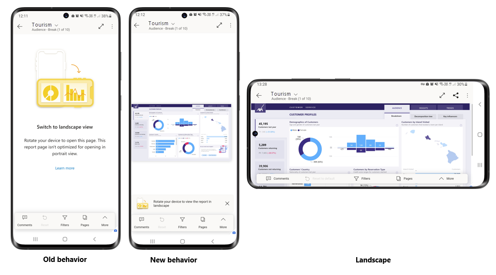
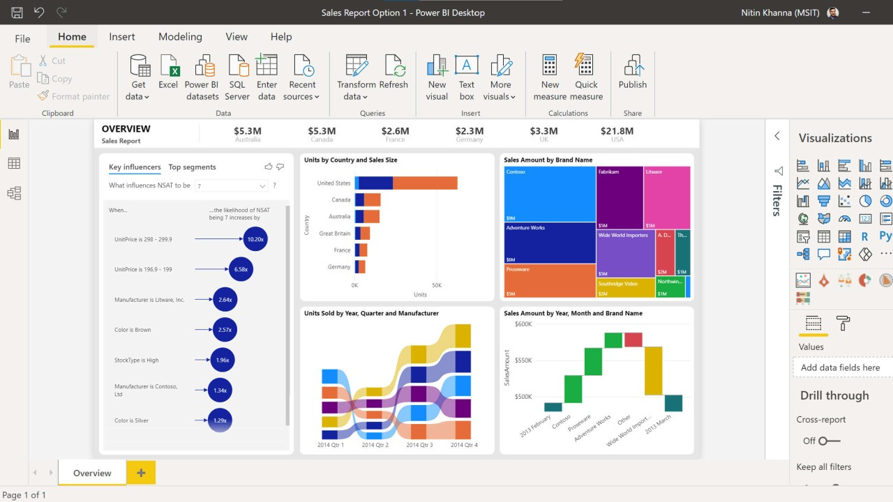
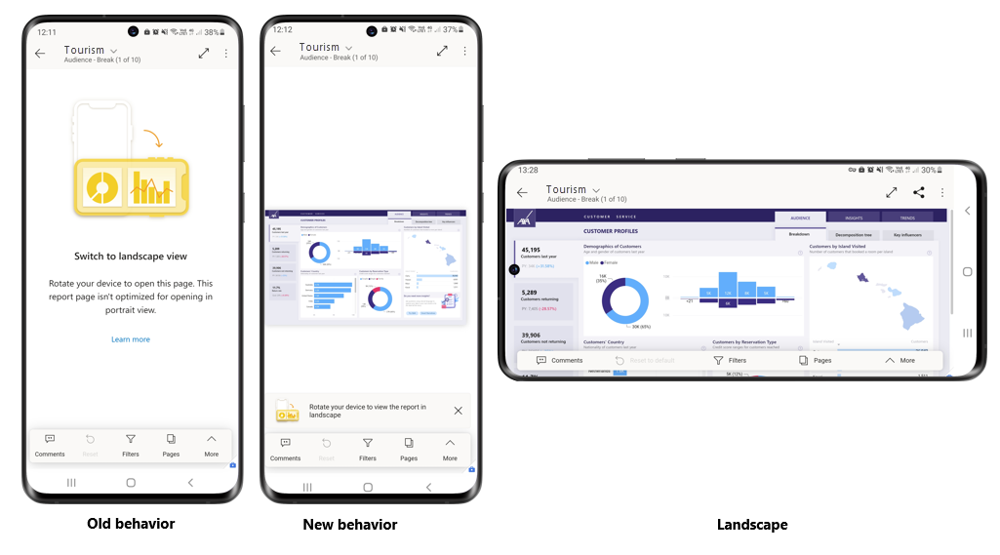
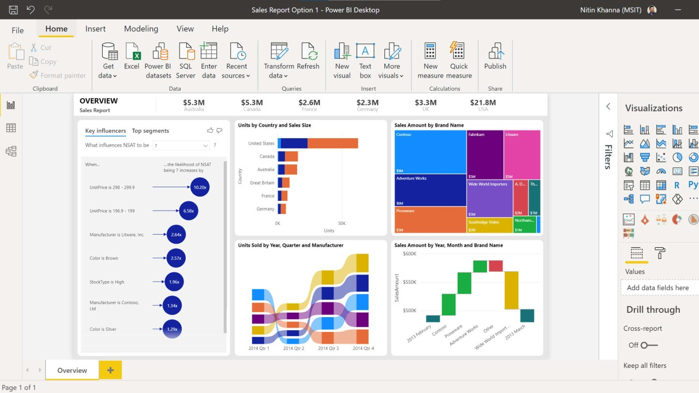

Power BI Desktop
O Power BI Desktop é uma ferramenta gratuita da Microsoft para análise de dados e criação de relatórios interativos. Ele conecta-se a diversas fontes de dados, permite a transformação e modelagem de dados, e utiliza a linguagem DAX para cálculos avançados. Com uma interface intuitiva, facilita a criação de visualizações interativas e relatórios detalhados. Os relatórios podem ser publicados no Power BI Service, permitindo colaboração e atualização automática dos dados. É uma solução poderosa e acessível para transformar dados em insights valiosos.
Power BI Mobile
O Power BI Mobile é o aplicativo da Microsoft que permite acessar relatórios e dashboards do Power BI em dispositivos móveis. Disponível para iOS, Android e Windows, ele oferece visualizações interativas e atualizações automáticas de dados, integrando-se ao Power BI Service para acesso conveniente aos insights de negócios em qualquer lugar. É essencial para profissionais que precisam de acesso móvel rápido e eficiente aos dados para tomada de decisões informadas.
Power BI Service
O Power BI Service é a plataforma na nuvem da Microsoft para hospedar, compartilhar e gerenciar relatórios e dashboards criados com o Power BI Desktop. Ele oferece colaboração em tempo real, atualizações automáticas de dados e segurança avançada com integração ao Azure Active Directory. Essencial para equipes que precisam acessar e compartilhar insights de negócios de maneira eficiente e segura através de qualquer navegador web ou aplicativo móvel.